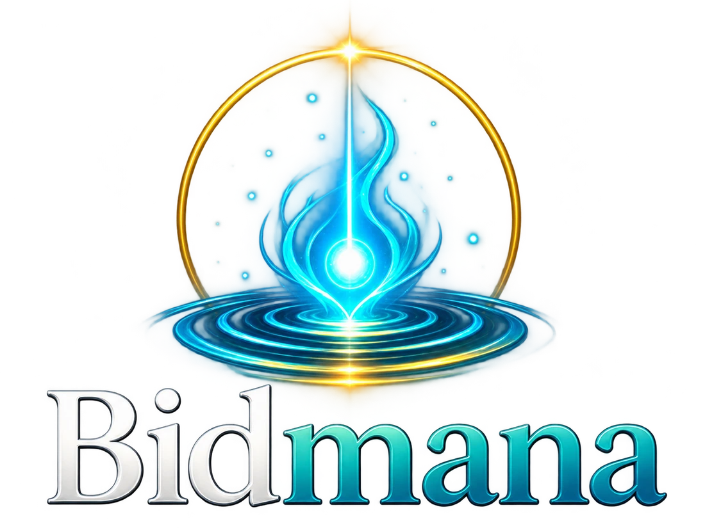

The GovCon Ecosystem
Bring opportunity discovery, capture management, AI-assisted proposals, and expert collaboration into one connected ecosystem.
Request a DemoHuman Experts and AI. One Team.
AI handles the volume. Experienced GovCon professionals bring the judgment. Working the same pursuit side by side, they win more.
GovCon experts
Former Contracting Officers and seasoned professionals you can bring into any pursuit.
- Capture strategy and win themes
- Color team reviews
- Judgment earned on real pursuits
The Oracle
AI that works through the volume in minutes.
- Reads every page of the solicitation
- Drafts from your own past performance
- Tracks every requirement and deadline
Stronger proposals, in less time, on the pursuits worth chasing.
One Pursuit. One Connected Workflow.
- 1
Discover opportunities
- 2
Evaluate pursuits
- 3
Organize capture operations
- 4
Build proposals
- 5
Collaborate with experts
- 6
Submit with confidence
Meet the Oracle
Your AI assistant within the Bidmana ecosystem.
It knows the proposal in front of you
Ask about strategy, win themes or any section, and get an answer drawn from your own documents.
You choose what it looks at
Point it at the sections that matter and every answer stays on them.
It sits beside your draft
No second tool and no copy and paste. The Oracle is one tab away while you write.
See it answer
More Than Another GovCon Tool.
- Intelligence
- Capture
- Proposals
- Knowledge
- Expertise
- Teaming
One ecosystem.